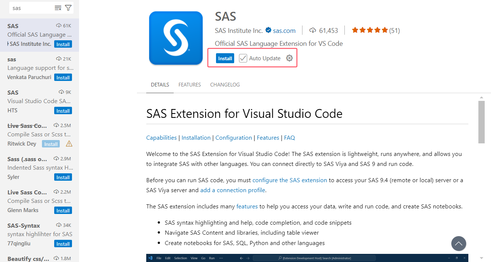
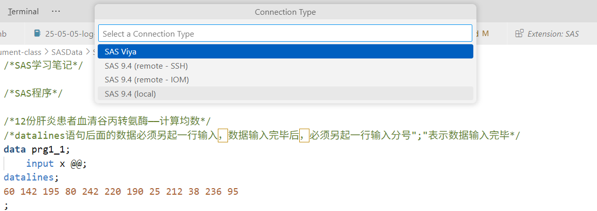
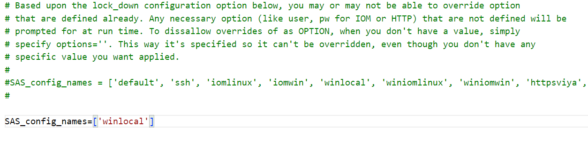

import saspy
%load_ext saspy.sas_magic
%%sas
data iris;
set sashelp.iris;
run;
proc print data=iris(obs=10);
run;01-SAS 安装与vscode 扩展
0.1 SAS 在 Windows 的安装
0.2 SAS 在 Linux 的安装
0.3 SAS 与 vscode 扩展
SAS VS Code 扩展轻量级，可在任何地方运行，并允许您集成 SAS 和其他语言。该工具还提供直接连接到 SAS Viya 和 SAS 9 并运行代码的功能。
SAS 语法突出显示和帮助、代码完成和代码片段
用于连接 SAS 和运行代码的配置文件配置
支持 SAS Viya 和 SAS 9 连接
访问 SAS 内容和库
为 SAS、SQL、Python 和其他语言创建笔记本
扩展程序可在 GitHub 上找到仓库与原代码：[vscode-sas-extension](https://github.com/sassoftware/vscode-sas-extension)
更多关于 SAS 与 vscode 的信息可以访问：[SAS Extension for Visual Studio Code](https://developer.sas.com/programming/vs_code_extension)
0.3.1 安装插件
在 vscode 的扩展页面搜索 “sas” ，第一个 “official SAS ···“ 即为正确扩展：

0.4 配置路径
Before you can run SAS code, you must configure the SAS extension to access your SAS 9.4 (remote or local) server or a SAS Viya server and add a connection profile.
在运行 SAS 代码之前，您必须配置 SAS 扩展以访问 SAS 9.4（远程或本地）服务器或 SAS Viya 服务器。您必须获得 SAS 9.4 或 SAS Viya 的许可才能运行 SAS 代码。
- 打开 SAS 程序文件。
- 单击 VS Code 窗口左下方状态栏中的“无配置文件”。 您还可以打开命令面板（
F1，或Ctrl+Shift+P在 Windows 或 Linux 上，或Shift+CMD+P在 OSX 上）并找到SAS: Add New Connection Profile命令。 - 按照“添加新连接配置文件”部分中的说明添加配置文件。
- 创建配置文件后，状态栏项将从“无配置文件”更改为新配置文件的名称。

更多设置可以查看[SAS Extension for Visual Studio Code Documentation](https://sassoftware.github.io/vscode-sas-extension/Configurations/Profiles/sas9local)
0.5 编译 SAS 文件
SAS 文件右上角有一个 奔跑的小人 ，点击即可开始运行所选中的程序段落，并在右侧窗口输出结果。
0.6 在 Jupyter Notebook 中使用 SAS
0.6.1 环境准备
- 安装 Anaconda 集成环境或 Python 和 SAS 软件，其中要求Python3.4+；
- SAS 需要 SAS 9.4+ 或 SAS Viya 3.1+；
- Python在Jupyter Notebook和SAS之间起一个桥梁的作用，Jupyter Notebook中的SAS代码会交给Python，Python负责将代码传递给SAS执行；
- 然后将执行的结果返回给Jupyter Notebook显示。
SAS版本要求9.4，也可以是 SAS Viya。
0.6.2 通过 pip 安装 SASPY
启动 cmd，输入命令：
pip install saspyspecific release：
pip install http://github.com/sassoftware/saspy/releases/saspy-X.X.X.tar.gz然后就会自动安装 saspy 及其相应的依赖项。
最好的更新或重装方式：
pip uninstall -y saspy
pip install saspy0.6.3 通过 uv 安装和管理
uv init name-of-project
cd name-of-project
uv add saspy # adds saspy to your project from PyPI0.6.4 通过 conda 安装和管理
conda create --name name-of-my-environment
conda install --channel conda-forge saspy # Installs latest version of saspy from conda-forge channel.
conda install --channel conda-forge saspy==X.X.X # Where X.X.X is the version you'd like to install.安装完成后可以输入命令：
jupyter kernelspec list来检测 saspy 是否安装成功，如果成功，理论上会看到如下形式的输出：
Available kernels:
python3 /home/sas/anaconda3/lib/python3.5/site-packages/ipykernel/resources
sas /home/sas/.local/share/jupyter/kernels/sas0.6.5 修改 Python 配置文件
安装好 saspy 后找到 Anaconda 或 Python 的安装目录，会有一个相应的文件夹出现，例如我的文件路径如下：
C:\Users\asus\AppData\Local\Programs\Python\Python312\Lib\site-packages\saspy在这个文件路径下找到 sascfg.py 文件，该文件中需要配置连接SAS的信息。可以配置连接本地机器的SAS；也可以配置连接远程机器的SAS Server，无论是Linux Server还是Windows Server都可以。此处就以连接本地SAS为例进行说明。
- 打开该文件，首先是一大段注释；
- 在这段注释后定义的第一个变量
SAS_config_names用于指定连接SAS的配置方式，提供了 10 种方式：default,ssh,iomlinux,iomwin,winlocal,winiomlinux,winiomwin,httpsviya,httpviya,iomcom。默认为default方式。 - 因为我们需要连接Windows机器本地的SAS，所以需要将
SAS_config_names的值修改为winlocal。

sascfg.py 的内容（2025年版配置文件）
#
# Copyright SAS Institute
#
# Licensed under the Apache License, Version 2.0 (the License);
# you may not use this file except in compliance with the License.
# You may obtain a copy of the License at
#
# http://www.apache.org/licenses/LICENSE-2.0
#
# Unless required by applicable law or agreed to in writing, software
# distributed under the License is distributed on an "AS IS" BASIS,
# WITHOUT WARRANTIES OR CONDITIONS OF ANY KIND, either express or implied.
# See the License for the specific language governing permissions and
# limitations under the License.
#
# THIS IS AN EXAMPLE CONFIG FILE. PLEASE CREATE YOUR OWN sascfg_personal.py FILE USING THE APPROPRIATE TEMPLATES FROM BELOW
# SEE THE CONFIGURATION DOC AT https://sassoftware.github.io/saspy/install.html#configuration
# Configuration Names for SAS - python List
# This is the list of allowed configuration definitions that can be used. The definition are defined below.
# if there is more than one name in the list, and cfgname= is not specified in SASsession(), then the user
# will be prompted to choose which configuration to use.
#
# The various options for the different access methods can be specified on the SASsession() i.e.:
# sas = SASsession(cfgname='default', options='-fullstimer', user='me')
#
# Based upon the lock_down configuration option below, you may or may not be able to override option
# that are defined already. Any necessary option (like user, pw for IOM or HTTP) that are not defined will be
# prompted for at run time. To dissallow overrides of as OPTION, when you don't have a value, simply
# specify options=''. This way it's specified so it can't be overridden, even though you don't have any
# specific value you want applied.
#
#SAS_config_names = ['default', 'ssh', 'iomlinux', 'iomwin', 'winlocal', 'winiomlinux', 'winiomwin', 'httpsviya', 'httpviya', 'iomcom']
#
SAS_config_names=['winlocal']
# Configuration options for saspy - python Dict # not required unless changing any of the defaults
# valid key are:
#
# 'lock_down' - True | False. True = Prevent runtime overrides of SAS_Config values below
#
# 'verbose' - True | False. True = Allow print statements for debug type messages
#
# 'prompt' - True | False. True = Allow prompting as necessary
#
SAS_config_options = {'lock_down': False,
'verbose' : True,
'prompt' : True
}
# Configuration options for SAS output. By default output is HTML 5.0 (using "ods html5" statement) but certain templates might not work
# properly with HTML 5.0 so it can also be set to HTML 4.0 instead (using "ods html" statement). This option will only work when using IOM
# in local mode. Note that HTML 4.0 will generate images separately which clutters the workspace and if you download the notebook as HTML,
# the HTML file will need to be put in the same folder as the images for them to appear.
# valid keys are:
#
# 'output' = ['html5', 'html']
# 'style' = any valid style # this will be the default for SASsession.HTML_Style, which you can also change dynamically in your code
#
#
SAS_output_options = {'output' : 'html5', # not required unless changing any of the default
'style' : 'HTMLBlue'}
# Configuration Definitions
#
# For STDIO and STDIO over SSH access methods
# These need path to SASHome and optional startup options - python Dict
# The default path to the sas start up script is: /opt/sasinside/SASHome/SASFoundation/9.4/sas
# A usual install path is: /opt/sasinside/SASHome
#
# The encoding is figured out by saspy. You don't need to specify it, unless you just want to get rid of the message about which encoding was determined.
#
# valid keys are:
# 'saspath' - [REQUIRED] path to SAS startup script i.e.: /opt/sasinside/SASHome/SASFoundation/9.4/sas
# 'options' - SAS options to include in the start up command line - Python List
# 'encoding' - This is the python encoding value that matches the SAS session encoding your SAS session is using
#
# For passwordless ssh connection, the following are also reuqired:
# 'ssh' - [REQUIRED] the ssh command to run
# 'host' - [REQUIRED] the host to connect to
#
# Additional valid keys for ssh:
# 'port' - [integer] the remote ssh port
# 'tunnel' - [integer] local port to open via reverse tunnel, if remote host cannot otherwise reach this client
#
default = {'saspath' : 'C:/Program Files/SASHome/SASFoundation/9.4/sas.exe'
}
winlocal = {
'saspath': 'C:\\Program Files\\SASHome\\SASFoundation\\9.4\\sas.exe'
}
# If you installed SAS by default path,the above path maybe effect for your Windows.
ssh = {'saspath' : '/opt/sasinside/SASHome/SASFoundation/9.4/bin/sas_en',
'ssh' : '/usr/bin/ssh',
'host' : 'remote.linux.host',
'encoding': 'latin1',
'options' : ["-fullstimer"]
}
# For IOM (Grid Manager or any IOM) and Local Windows via IOM access method
# These configuration definitions are for connecting over IOM. This is designed to be used to connect to any Workspace server, including SAS Grid, via Grid Manager
# and also to connect to a local Windows SAS session. The client side (python and java) for this access method can be either Linux or Windows.
# The STDIO access method above is only for Linux. PC SAS requires this IOM interface.
#
# The absence of the iomhost option triggers local Windows SAS mode. In this case none of 'iomhost', 'iomport', 'omruser', 'omrpw' are needed.
# a local SAS session is started up and connected to.
#
# The encoding is figured out by saspy. You don't need to specify it, unless you just want to get rid of the message about which encoding was determined.
# NONE OF THE PATHS IN THESE EAMPLES ARE RIGHT FOR YOUT INSTALL. YOU HAVE TO CHANGE THE PATHS TO BE CORRECT FOR YOUR INSTALLATION
#
# valid keys are:
# 'java' - [REQUIRED] the path to the java executable to use
# 'iomhost' - [REQUIRED for remote IOM case, Don't specify to use a local Windows Session] the resolvable host name, or ip to the IOM server to connect to
# 'iomport' - [REQUIRED for remote IOM case, Don't specify to use a local Windows Session] the port IOM is listening on
# 'authkey' - identifier for user/password credentials to read from .authinfo file. Eliminates prompting for credentials.
# 'omruser' - not suggested [REQUIRED for remote IOM case but PROMPTED for at runtime] Don't specify to use a local Windows Session
# 'omrpw' - really not suggested [REQUIRED for remote IOM case but PROMPTED for at runtime] Don't specify to use a local Windows Session
# 'encoding' - This is the python encoding value that matches the SAS session encoding of the IOM server you are connecting to
# 'appserver' - name of physical workspace server (when more than one app server defined in OMR) i.e.: 'SASApp - Workspace Server'
# 'sspi' - boolean. use IWA instead of user/pw to connect to the IOM workspace server
iomlinux = {'java' : '/usr/bin/java',
'iomhost' : 'linux.iom.host',
'iomport' : 8591,
}
iomwin = {'java' : '/usr/bin/java',
'iomhost' : 'windows.iom.host',
'iomport' : 8591,
}
winlocal = {'java' : 'java',
'encoding' : 'EUC-CN',
}
winiomlinux = {'java' : 'java',
'iomhost' : 'linux.iom.host',
'iomport' : 8591,
}
winiomwin = {'java' : 'java',
'iomhost' : 'windows.iom.host',
'iomport' : 8591,
}
winiomIWA = {'java' : 'java',
'iomhost' : 'windows.iom.host',
'iomport' : 8591,
'sspi' : True
}
# For Remote and Local IOM access methods using COM interface
# These configuration definitions are for connecting over IOM using COM. This
# access method is for Windows clients connecting to remote hosts. Local
# SAS instances may also be supported.
#
# This access method does not require a Java dependency.
#
# Valid Keys:
# iomhost - Required for remote connections only. The Resolvable SAS
# server dns name.
# iomport - Required for remote connections only. The SAS workspace
# server port. Generally 8591 on standard remote
# installations. For local connections, 0 is the default.
# class_id - Required for remote connections only. The IOM workspace
# server class identifier. Use `PROC IOMOPERATE` to identify
# the correct value. This option is ignored on local connections.
# provider - [REQUIRED] IOM provider. "sas.iomprovider" is recommended.
# encoding - This is the python encoding value that matches the SAS
# session encoding of the IOM server.
# omruser - SAS user. This option is ignored on local connections.
# omrpw - SAS password. This option is ignored on local connections.
# authkey - Identifier for credentials to read from .authinfo file.
iomcom = {
'iomhost' : 'mynode.mycompany.org',
'iomport' : 8591,
'provider': 'sas.iomprovider',
'encoding': 'windows-1252'}
# HTTP access method to connect to the Compute Service
# These need ip addr, other values will be prompted for - python Dict
# valid keys are:
# 'url' - (Required if ip not specified) The URL to Viya, of the form "http[s]://host.idenifier[:port]".
# When this is specified, ip= will not be used, as the host's ip is retrieved from the url. Also, ssl= is
# set based upon http or https and port= is also parsed from the url, if provided, else defaulted based
# upon the derived ssl= value. So neither ip, port nor ssl are needed when url= is used.
# 'ip' - (Required if url not specified) The resolvable host name, or IP address to the Viya Compute Service
# 'port' - port; the code Defaults this to based upon the 'ssl' key; 443 default else 80
# 'ssl' - whether to use HTTPS or just HTTP protocal. Default is True, using ssl and poort 443
# 'context' - context name defined on the compute service [PROMTED for at runtime if more than one defined]
# 'authkey' - identifier for user/password credentials to read from .authinfo file. Eliminates prompting for credentials.
# 'options' - SAS options to include (no '-' (dashes), just option names and values)
# 'user' - not suggested [REQUIRED but PROMTED for at runtime]
# 'pw' - really not suggested [REQUIRED but PROMTED for at runtime]
#
#
httpsviya = {'url' : 'https://viya.deployment.com',
'context' : 'SAS Studio compute context',
'authkey' : 'viya_user-pw',
'options' : ["fullstimer", "memsize=1G"]
}
httpviya = {'url' : 'https://sastpw.rndk8s.openstack.sas.com:23456',
#'port' : 23456, # can put different port here or ^ if it's not using the default port
'context' : 'SAS Studio compute context',
'authkey' : 'viya_user-pw',
'options' : ["fullstimer", "memsize=1G"]
}后续有一些安装步骤，但是大多是在2016-2020年更新的教程，无法找到复现的路径，可能相关的配置已被优化。
包括这个 [SAS岩论 | 在Jupyter Notebook中使用SAS ](https://www.sohu.com/a/218339423_278472) 中写到的需要使用 cpW 定义 SAS 路径。
0.6.6 修改系统变量
将sas相关文件 sspiauth.dll 添加到系统环境变量，该文件很可能在如下目录：
C:\Program Files\SASHome\SASFoundation\9.4\core\sasext（注意添加变量时不要包含 sspiauth.dll 文件本身）
Warning: 环境变量添加完成后，要重启电脑才会生效。
0.6.7 在 jupyter notebook 中使用 SAS
新建文件，选择使用 SAS 内核，或者在 cell 中通过 magic command 指定内核。
%%sas使用语法如下所示：
%%sas
data iris;
set sashelp.iris;
run;
proc print data=iris(obs=10);
run;在Notebook中写SAS代码了，跟Python一样，同样有代码提示、语法高亮的功能。但是你会注意到过程步的结果显示了，运行的日志去哪里了？
如果代码运行错误或者没有输出（例如纯DATA步）的话，那么输出就是日志信息。
能够正确运行且有输出结果的代码就不会显示日志了。
0.7 安装SAS日志组件
如果想要像SAS Base一样，随时查看所有程序运行的日志结果也没问题。安装一个Notebook的SAS日志扩展组件就可以了。打开Anaconda Prompt，输入以下命令安装：
jupyter nbextension install --py sas_kernel.showSASLog运行完毕后，输入以下命令启用SAS日志组件：
jupyter nbextension enable sas_kernel.showSASLog –py0.8 连接SAS Server
如果需要配置连接远程的SAS Server，如连接远程Windows机器的SAS Server，需在sascfg.py中做以下修改：
将SAS_config_names的值改为“wintowin”；
在wintowin连接方式中将参数iomhost的值修改为远程Windows机器的IP地址；将参数encoding的值修改为euc-cn；
将cpW中5个Jar包的路径修改为远程Windows机器中SAS对应的目录。
修改完毕后，启动Notebook，首次运行SAS代码时，会提示输入访问SAS Server的有效SAS用户和密码。1
0.8.1 典型生态项目
SASPy
SASPy 是一个 Python 库，允许你通过 Python 代码与 SAS 进行交互。SAS Kernel 依赖于 SASPy，因此在使用 SAS Kernel 之前，你需要配置 SASPy。
JupyterLab 扩展
SAS Kernel 支持 JupyterLab 扩展，这些扩展可以提高你在 JupyterLab 中的编程效率。你可以通过以下命令安装这些扩展：
pip install sas_kernel[jlab_ext]NBGrader
NBGrader 是一个用于分配和评分 Jupyter Notebook 的系统，它与 SAS Kernel 兼容。你可以使用 NBGrader 来创建和评分包含 SAS 代码的作业。
通过这些生态项目，SAS Kernel 不仅扩展了 Jupyter Notebook 的功能，还增强了其在数据科学和分析领域的应用能力。2
1 Quarto 中使用 jupyter 调用 SAS_kernel
1.1 idea？
因为在jupyter中已经确定可以通过魔法命令来调用 Stata 和 SAS 的 engine 来实现 Pytho(jupyter) 和 Stata/SAS 的联合使用，但是 Quarto 中也可以直接使用 Python 的命令，实现的形式如下：
1.2 实现
这里首先按照基本的结构组装了一个程序，但是运行后报错
Cell In[1], line 5
data iris;
^
SyntaxError: invalid syntax1.2.1 报错原因
- %load_ext 是一个单行 cell magic，不能和 %%sas 混在同一个 cell 里;
- %%sas 是 cell magic，它期望在 cell 顶部单独存在。
- Quarto 里的一个 chunk 是一个 cell。这里把所有东西都写进一个 chunk，相当于写进了一个 Python cell，解释器会试图把 SAS 语句当作 Python 执行，自然就报错了。
1.2.2 修改
import saspy
%load_ext saspy.sas_magic%%SAS
proc print data=sashelp.iris(obs=10);
run;Using SAS Config named: winlocal
SAS Connection established. Subprocess id is 29008
| 观测 | Species | SepalLength | SepalWidth | PetalLength | PetalWidth |
|---|---|---|---|---|---|
| 1 | Setosa | 50 | 33 | 14 | 2 |
| 2 | Setosa | 46 | 34 | 14 | 3 |
| 3 | Setosa | 46 | 36 | 10 | 2 |
| 4 | Setosa | 51 | 33 | 17 | 5 |
| 5 | Setosa | 55 | 35 | 13 | 2 |
| 6 | Setosa | 48 | 31 | 16 | 2 |
| 7 | Setosa | 52 | 34 | 14 | 2 |
| 8 | Setosa | 49 | 36 | 14 | 1 |
| 9 | Setosa | 44 | 32 | 13 | 2 |
| 10 | Setosa | 50 | 35 | 16 | 6 |
顺利完成。
1.3 forward？
由于在 .ipynb 文件中运行 SAS 程序后得到的 .html 文件在编译为网站后会出现“畸变”，改用 .qmd 后也许会有所改进。
同时 .qmd 对一些文档控制之处的支持更为便捷，且可以插入文献和脚注，更适合作为专业的文档编辑工具。
2025.07.07 实测，在 .qmd 中插入 SAS 程序运行后编译网页还是有“畸变”，暂时不清楚是由 .qmd 还是 .ipynb 引起。